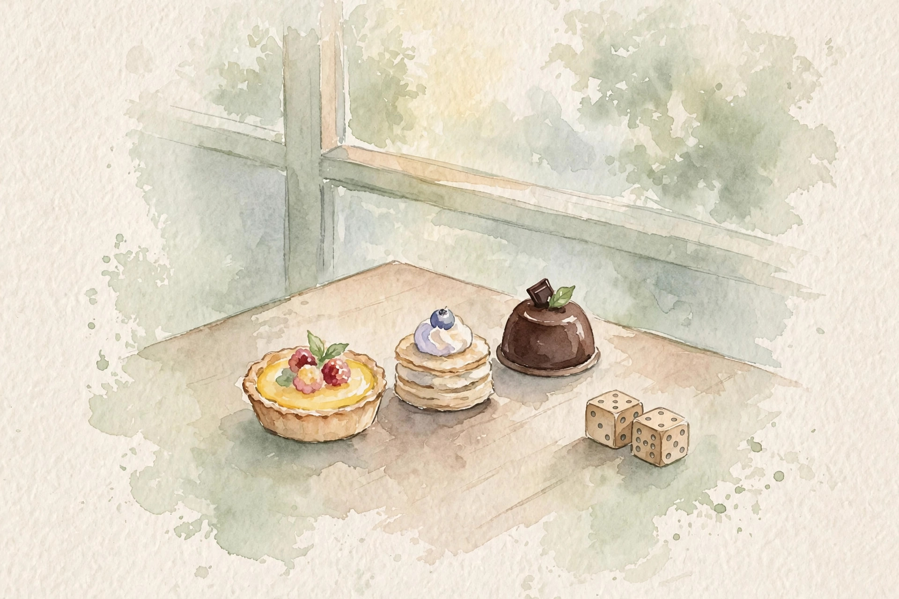
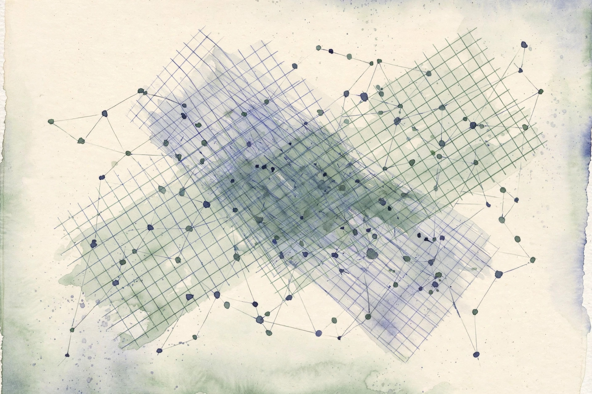

U02 · Random utility, axioms, and factor models
Why do identical people facing identical options choose differently? Random utility models answer with a hidden score plus a daily shock. This unit derives the softmax from that shock, states the axioms a utility story needs, breaks them on purpose, and then compresses whole populations of tasters into a few factors.

Sourcing. No full transcript exists for sessions S03 and S04. This companion narrates content/v2/cs329h/lessons/u02_lesson.md. Concepts C01 through C06 map to S03 at title level, and C07 through C09 map to S04 at title level. Concepts C10, C11, and C12 are requested extensions: the lesson marks them PLANNED / SOURCE ATTRIBUTION PENDING, and they are taught here as independent theory with that label.
How to read the tags. Every number carries its lesson section. Anything the companion computes is tagged Illustration. A Interpretation tag marks the companion's own reading of the lesson. Where the lesson leaves a value out, the page says so in words.
From the lesson A fact, number, or mechanism from the lesson.
Illustration Invented by the companion: an analogy, a toy with made-up values, or a what-if. Never lecture content.
Interpretation The companion's reading of why a lesson fact matters. The fact is the lesson's, the gloss is ours.
C01 · Contract 6 Points to the exact lesson section behind a claim or number.
Section 1 · C01, C02, C06
From the lessonC01 · Contract 3, 5
Utility is a hidden scoreboard. Higher means wanted more. You never see the scoreboard. You only see which option won each contest. With zero noise the choice is deterministic: the top-utility item always wins. With noise, the winner varies, and the choice frequencies reveal the utilities up to scale. The lesson toy uses three snacks with appeal 1.0, 0.5, and -0.5. Lesson figure u02_f07 maps those utilities to shares 0.55, 0.33, 0.12.
From the lessonC02 · Contract 4, 5
The noise has a shape, and the shape matters. Each option gets an independent Gumbel shock: U_i = u_i + e_i, and the choice is the argmax. Condition on one shock, multiply the CDFs of the rest, integrate over the Gumbel density, and the integral collapses to the softmax: P(choose i) = exp(u_i) / sum_j exp(u_j). Other noise shapes give other rules. Gaussian noise gives the probit model, which has no closed form and needs integrals.
From the lessonC02 · Contract 6
The lesson verifies the derivation by simulation, not by trust. With utilities [1.0, 0.5, 0.0] and 20000 Gumbel draws, the simulated shares are 0.511, 0.308, 0.181 against the formula's 0.506, 0.307, 0.186. The maximum gap is 0.005. Monte Carlo error shrinks as 1 over the square root of n, which is why 20000 draws buy about 0.004 accuracy here. Lesson figure u02_f01 draws both bar charts side by side.
From the lessonC06 · Contract 5, 6
The same rule scales to any number of options. With utilities [2.0, 1.0, 0.0, -1.0, -2.0] the shares are 0.636, 0.234, 0.086, 0.032, 0.012. The top option takes nearly two-thirds. One fact from this concept is used later in U05: the log of the denominator, the partition function, equals the expected maximum utility, which becomes the regularized optimum there.
Argmax plus Gumbel noise is the softmax. The noise family chooses the choice rule.
Illustration Move the utilities and watch the shares follow the lesson's softmax rule. Then add a clone of option 2 and watch the red bus effect from C05 happen live.
1.0
0.5
-0.5
The logit rule is the lesson's (C02). The clone is the companion's demo of C05: under a flat logit the ratio of any two shares never moves, so the newcomer steals from everyone in proportion.
Section 2 · C03, C04, C05
From the lessonC03 · Contract 3, 5, 6
Axioms are hygiene rules for choices. Transitivity says if A beats B and B beats C, then A beats C. Without it, no single ranking explains the data. The contrapositive is the test: a cycle refutes the single-utility story. The lesson toy shows the cycle A beats B, B beats C, C beats A, each at 0.80. The best single-score fit predicts 0.50 everywhere, leaving a residual of 0.30 per pair. Lesson figure u02_f03 draws the three 0.80 bars against the three 0.50 bars.
From the lessonC03 · Contract 11
Sampling noise creates fake cycles. With few comparisons per pair, majority votes cycle by chance: 1-0 records on three pairs cycle with probability 1/4 under pure noise. The falsifiable check is a permutation test: cycle counts within the permutation range mean noise, not structure.
From the lessonC04 · Contract 3, 5, 6
Stochastic consistency is the probabilistic version. Strong stochastic transitivity: if A usually beats B and B usually beats C, then A must beat C at least as usually. Under Bradley-Terry the bound is exact: p_ab = p_bc = 0.7 gives gaps of 0.847 each, so p_ac must be sigma(1.694) = 0.845. An observed 0.2 would be a hard violation. The 0.80 cycle violates the bound maximally.
A cycle refutes the single-utility story. Rock-paper-scissors data cannot come from one score per item.
From the lessonC05 · Contract 3, 4, 5, 6
IIA says the ratio of two options' shares never changes when other options come or go. The logit implies it: P(car)/P(red) = exp(u_car - u_red), independent of the choice set. The red bus breaks it. Car 2/3, red bus 1/3. Add a blue bus identical to the red one. IIA keeps the car to red ratio at 2:1 and symmetry gives red to blue at 1:1, so the shares become car 0.50, red 0.25, blue 0.25. Intuition says the car should keep 0.67 while the buses split 0.33. Lesson figure u02_f02 computes the IIA prediction.
Under the flat logit, the ratio of two shares never moves. A near-duplicate newcomer cannibalizes everyone in proportion, which is exactly wrong.
Section 3 · C07, C08
From the lessonC07 · Contract 3, 4, 5, 6
Four respondents rate five items: twenty numbers. The factorization asks whether 8 + 10 numbers can replace them. Each respondent gets a taste vector, each item gets a feature vector, and the score is their dot product: M[j,i] = r_j . v_i. The assumption is low rank, here rank 2. The SVD recovers the factors up to rotation, and on the lesson toy the rank-2 reconstruction error is 0.0000. The entries range about -3 to 3, and all of that structure compresses into the factors exactly. Lesson figure u02_f04 draws the heatmap and the factor vectors.

From the lessonC07 · Contract 9, 11
The rank is a bet. A block-diagonal preference matrix needs rank equal to the number of blocks, and choosing d trades bias against variance. The falsifiable rule: select d by held-out prediction, not by the scree plot. If d = 3 beats d = 2 out of sample, the rank-2 claim fails.
From the lessonC08 · Contract 5, 6
A new respondent arrives with two known ratings. Triangulate their position by least squares against the item factors, then predict the unseen items. The lesson toy is honest about what happens: the new respondent rates items 0 and 1 at 1.5 and -0.5, the fit gives r near [14.26, 6.17], and the item-4 prediction is a wild -12.42. The items 0 and 1 have nearly collinear factors, so two ratings do not determine the position. Fold-in needs varied item factors, not just enough of them.
Shared structure compresses the table. Twenty ratings become eighteen numbers when tastes vary smoothly along two axes.
Fold-in needs varied items, not just enough items. Collinear factors leave the new position undetermined and the predictions go wild.
Section 4 · C09, C10
From the lessonC09 · Contract 3, 5, 6
The pooled win rate is 0.48. Does anyone actually sit at 0.48? The lesson toy answers no. Two groups sit at 0.88 and 0.08, and the pooled 0.484 represents nobody. With 500 respondents per group, the pooled number is precise and wrong: it describes a voter who does not exist. The mixture form is explicit: pooled P = alpha sigma(d_1) + (1 - alpha) sigma(d_2). The falsifiable check: within-group fits must beat the pooled fit on held-out data, or the groups are theater. Lesson figure u02_f05 draws the one pooled bar against the two group bars.
The average voter does not exist. Pooling two opposite camps produces a middle number nobody holds.
Interpretation The next two concepts are requested extensions, marked PLANNED / SOURCE ATTRIBUTION PENDING in the lesson and taught here as independent theory.
From the lessonC10 · Contract 3, 5, 6
Utilities [2, 1, -1] or [4, 2, -2]. Which is right? Both, once the noise scales too. Doubling every utility and doubling the noise leaves every choice unchanged, because argmax(c u_i + c e_i) = argmax(u_i + e_i) for c greater than 0. Utility numbers and noise size are two dials with one effect. Only the ratio is real. The lesson shows utilities u and 2u with matched noise giving identical shares 0.547, 0.331, 0.122. The convention: fix the noise scale at 1 and estimate u. The trap: comparing utilities across two fitted models with different implicit scales is meaningless. Group A seeming to care more may just be group A with less noise. Lesson figure u02_f06 draws the identical twin bar charts.
Utility and noise are one ratio. A utility number means nothing until the noise scale is fixed.
Section 5 · C11, C12
From the lessonC11 · Contract 3, 5
Every estimator is a contract: IID records, correct noise family, connected comparison graph, fixed scale, correct rank for factors, and no unmodeled heterogeneity. Break a clause and the numbers lie quietly. Each clause maps to a failure already computed in this unit: repeats break IID, buses break the noise family, disconnected graphs break identification, free scale breaks interpretation, wrong rank leaves signal in the residual, pooled groups break the single-model story. The pre-fit checklist script tests graph connectivity, repeat rate, cycle count, and a heterogeneity screen. All checks are cheap. The repair of a failure is the expensive part.
From the lessonC11 · Contract 11
The checklist itself assumes the checks have power. With tiny n every check passes vacuously: ten records pass all checks and still mislead. Detection is not a substitute for data.
From the lessonC12 · Contract 4, 5, 6
Four mini-datasets, four breaks, four repairs. The 0.80 cycle breaks scores. The repair is a pairwise-only model. The red and blue buses break IIA. The repair is the nested logit. Two opposite groups break pooling. The repair is the mixture. Doubled utilities break interpretation. The repair is the scale fix. The nested logit repair is numeric. Flat logit gives car 0.50, red 0.25, blue 0.25. Nesting the buses restores car 0.67, red 0.17, blue 0.17. Lesson figure u02_f08 draws both.
Check the contract before the fit. Six clauses, six named failures, and the repair always costs more than the check.
Wisdom index